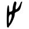
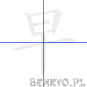

Kanji część 4
Pora na kolejną porcję kanji. Tym razem rozpoczynamy od małej lekcji. Będzie to lekcja rozpoznawania nóżek. Tak, dobrze przeczytałeś. Nóżek. Otóż kanji posiadają czasem nóżki. Ale nie zawsze takie same.
Czasami są to nóżki człowieka i wtedy wygląda ją one tak: 儿. Widać stopę w prawej nodze, w drugiej nie widać, bo akurat druga zaraz zrobi krok.
Drugi rodzaj nóżek to nóżki zwierzęcia. Zwierzątka nie mają stóp (a przynajmniej nie tak jak ludzie) i wyglądają tak: ハ. Ot, takie niepozorne łapki.
Obydwa rodzaje nóżek to oczywiście tylko klucze służące do układania historii, a nie prawdziwe kanji. Dodatkowo poznajmy jeszcze klucz 厶, który przyjmie znaczenie "łokieć".
Jeżeli już potrafisz rozróżniać nóżki i wiesz jak wygląda łokieć, to możemy przejść do lekcji właściwej.
on'yomi
シ
kun'yomi
と.まる, -ど.まり, と.める, -と.める, -ど.め, とど.める, とど.め, とど.まる, や.める, や.む, -や.む, よ.す, -さ.す, -さ.し, どめ
Komentarz
Oryginalne znaczenie tego znaku to "stopa" i jako radykał w takim znaczeniu będziemy go używać. W obecnej postaci wyobrażenie sobie stopy na podstawie tego kanji może wymagać sporej wyobraźni, ponieważ oryginalny piktogram wygląda tak: .
Jeżeli już zapamiętamy kształt tej dziwnej stopy, to bardzo łatwo będzie skojarzyć z wyrazem "stop".
Przykładowe wyrażenia
| kanji |
hiragana |
znaczenie |
| 止まる |
とまる |
zatrzymać się |
| 廃止 |
はいし |
kasacja, zniesienie |
| 中止 |
ちゅうし |
przerwać, pauzować, zawiesić |
| 禁止 |
きんし |
zakaz |
| 防止 |
ぼうし |
zapobieganie, prewencja |
| 止める |
やめる |
rzucić (np. palenie), zrezygnować (z pracy itp.) |
prawidłowy, właściwy, słuszny
on'yomi
セイ, ショウ
kun'yomi
ただ.しい, ただ.す, まさ, まさ.に, おお, くに, ま, まさし, ただし
Komentarz
Mamy tu 一 jako "jedynkę" na górze znaku, a pod nią 止 - "stop".
Jeżeli chcesz zrobić coś prawidłowo, nawet jeden błąd czy niedoskonałość powinny spowodować, że powiesz sobie "STOP - musimy to poprawić!".
Przykładowe wyrażenia
| kanji |
hiragana |
znaczenie |
| 正しい |
ただしい |
właściwy, słuszny |
| 改正 |
かいせい |
poprawka, przeróbka, wydanie nowej wersji |
| 修正 |
しゅうせい |
korekcja, poprawa, modyfikacja |
| 正式 |
せいしき |
oficjalny, formalny |
| 正確 |
せいかく |
dokładność, akuratność, prawdziwość |
on'yomi
セキ
kun'yomi
ゆう, ゆ
Komentarz
Choć można skojarzyć sobie ten znak z księżycem 月, a właściwie jego kawałkiem (widocznym zza chmury?), to jego kształt możesz też skojarzyć go z godziną 7 po południu, kiedy to zapada wieczór.
Przykładowe wyrażenia
| kanji |
hiragana |
znaczenie |
| 夕食 |
ゆうしょく |
kolacja, wieczorny posiłek |
| 夕方 |
ゆうがた |
wieczór |
| 夕日 |
ゆうひ |
wieczorne, zachodzące słońce |
on'yomi
テン
kun'yomi
あまつ, あめ, あま-, あき, あも, た, たかし, て, なま
Komentarz
Choć i tym razem mamy kreskę na górze znaku, to jednak tym razem pomyślmy o niej jak o suficie. Wielkim suficie nad wszystkim dookoła - a takim może być tylko niebo. Można też pomyśleć o Wielkim 大 i Jedynym, który jest w Niebie.
Przykładowe wyrażenia
| kanji |
hiragana |
znaczenie |
| 天気 |
てんき |
pogoda |
| 天井 |
てんじょう |
sufit |
| 天皇 |
てんのう |
Imperator Japonii |
| 天国 |
てんごく |
niebo (przeciwieństwo piekła) |
| 天使 |
てんし |
anioł |
| 天才 |
てんさい |
geniusz, cudowne dziecko |
on'yomi
シュ, ズ
kun'yomi
て, て-, -て, た-
Komentarz
Choć ilość palców może się nie zgadzać, to takie właśnie znaczenie ma to kanji. Jako część innych kanji czasami traci górną kreskę i wtedy faktycznie ma pięć palców.
Przykładowe wyrażenia
| kanji |
hiragana |
znaczenie |
| 手 |
て |
ręka |
| 相手 |
あいて |
partner |
| 手続き |
てつづき |
procedura, postępowanie |
| 手術 |
しゅじゅつ |
operacja chirurgiczna |
| 手紙 |
てがみ |
list |
| 歌手 |
かしゅ |
piosenkarz |
| 運転手 |
うんてんしゅ |
kierowca |
on'yomi
カ
kun'yomi
ひ, -び, ほ-
Komentarz
To kanji przypomina nieco ognisko: ułożone w stożek drwa i płomienie po bokach. Jako część innych kanji przyjmie czasem postać czterech kresek 灬 na dole kanji, np. jak w kanji na rybę: 魚.
Przykładowe wyrażenia
| kanji |
hiragana |
znaczenie |
| 火 |
ひ |
ogień |
| 火山 |
かざん |
wulkan, "ognista góra" |
| 火曜日 |
かようび |
wtorek |
| 火事 |
かじ |
pożar |
| 花火 |
はなび |
fajerwerki, sztuczne ognie |
on'yomi
ケン
kun'yomi
いぬ, いぬ-
Komentarz
Pies, i to nie byle jaki! Wielki 大, w dodatku macha ogonem!
Przykładowe wyrażenia
| kanji |
hiragana |
znaczenie |
| 犬 |
いぬ |
pies |
| 愛犬 |
あいけん |
piesek (zwierzak domowy) |
| 小犬 |
こいぬ |
szczeniak |
| 犬歯 |
けんし |
kieł |
on'yomi
オウ, -ノウ
kun'yomi
おお, おおきみ, わ
Komentarz
Nie wiem, czy Chińczycy tworząc kanji grali w szachy, czy może twórca szachów inspirował się kanji, ale ten znak wygląda jak szachowy król!
Przykładowe wyrażenia
| kanji |
hiragana |
znaczenie |
| 王 |
おう |
król, władca |
| 女王 |
じょおう |
królowa |
| 王座 |
おうざ |
tron |
| 王国 |
おうこく |
królestwo |
| 王子 |
おうじ |
królewicz |
on'yomi
ギョク
kun'yomi
たま, たま-, -だま, おう, だん
Komentarz
Widzimy tu króla 王 trzymającego coś niewielkiego. To jego kuliste berło, będące atrybutem władzy króla.
Przykładowe wyrażenia
| kanji |
hiragana |
znaczenie |
| 玉 |
たま |
kula, sfera; moneta |
| 目玉 |
めだま |
gałka oczna |
| 玉子 |
たまご |
jajko |
| 十円玉 |
じゅうえんだま |
moneta dziesięciojenowa |
on'yomi
セイ, ショウ
kun'yomi
い.きる, い.かす, い.ける, う.まれる, う.まれ, うまれ, う.む, お.う, は.える, は.やす, き, なま, なま-, な.る, な.す, む.す, -う, あさ, いき, いく, いけ, うぶ, うまい, え, おい, ぎゅう, くるみ, ごせ, さ, じょう, すぎ, そ, そう, ちる, なば, にう, にゅう, ふ, み, もう, よい, りゅう
Komentarz
To kanji używane jest również do określenia "lanego" piwa kuflowego 生ビール (wtedy znak czytany jest jako "nama"). Oczami wyobraźni widzę dystrybutor mojego ulubionego polskiego piwa na "ż" (uwaga, reklama!

z kranikiem po lewej stronie...
Przykładowe wyrażenia
| kanji |
hiragana |
znaczenie |
| 先生 |
せんせい |
nauczyciel, mistrz |
| 誕生 |
たんじょう |
narodziny |
| 誕生日 |
たんじょうび |
dzień urodzin, urodziny |
| 人生 |
じんせい |
życie |
| 学生 |
がくせい |
student |
| 生む |
うむ |
urodzić |
| 一年生 |
いちねんせい |
pierwszoroczniak |
| 生年月日 |
せいねんがっぴ |
data urodzin |
| 生きる |
いきる |
żyć |
| 生け花 |
いけばな |
ikebana, sztuka aranżacji kwiatów, kompozycja kwiatowa |
on'yomi
リツ, リュウ, リットル
kun'yomi
た.つ, -た.つ, た.ち-, た.てる, -た.てる, た.て-, たて-, -た.て, -だ.て, -だ.てる, たち, たっ, たつ, だて, つい
Komentarz
Już widzę tą osobę wymyślającą znaki kanji. Siedzi sobie w fotelu, obgryza ołówek i rozgląda się po pokoju. "Co by tu wymyślić... Mam! Wazon stoi na stole! Niech będzie, czemu nie. Dobra, następne..."
Trudno, my to musimy teraz zapamiętać: "stać" wygląda jak wazon.
Przykładowe wyrażenia
| kanji |
hiragana |
znaczenie |
| 立つ |
たつ |
stać |
| 立場 |
たちば |
stanowisko, pozycja |
| 成立 |
せいりつ |
powstanie, stworzenie |
| 役立つ |
やくだつ |
użyteczny, pomocny |
| 中立 |
ちゅうりつ |
neutralność |
| 日立 |
ひたち |
Hitachi |
on'yomi
オン, -ノン, イン
kun'yomi
おと, ね, お, と
Komentarz
Wyobraź sobie dźwięk Twojego budzika, kiedy każdego dnia zmusza Cię do powstania na równe nogi. Niezbyt miły uszom dźwięk!
Przykładowe wyrażenia
| kanji |
hiragana |
znaczenie |
| 音 |
おと |
dźwięk |
| 音楽 |
おんがく |
muzyka |
| 録音 |
ろくおん |
nagranie, zapis audio |
| 騒音 |
そうおん |
szum, hałas |
| 発音 |
はつおん |
wymowa |
| 音色 |
ねいろ |
ton, barwa dźwięku |
| 音質 |
おんしつ |
jakość dźwięku |
| 足音 |
あしおと |
dźwięk kroków |
on'yomi
メイ, ミョウ
kun'yomi
な, -な, と
Komentarz
A może romantyczna historyjka? Jest wieczór, jesteś ze swoją ukochaną osobą. Jest ciemno, widzisz tylko jej usta szepczące Twoje imię.
Inna historyjka: w japońskim imię Taro jest odpowiednikiem polskiego Jana - używa się go często jako przykład przy wyjaśnieniu sposobu wypełniania dokumentów. Jeżeli to imię zapisać katakaną, dostaniemy タロ. A jak odpowiednio złożyć te dwa znaki?
Przykładowe wyrażenia
| kanji |
hiragana |
znaczenie |
| 名前 |
なまえ |
imię |
| 有名 |
ゆうめい |
sławny |
| 氏名 |
しめい |
pełne nazwisko, nazwisko i imię |
| 名称 |
めいしょう |
nazwa |
| 名刺 |
めいし |
wizytówka |
| 名詞 |
めいし |
rzeczownik |
on'yomi
ケン
kun'yomi
み.る, み.える, み.せる
Komentarz
Mamy tutaj męskie oko (jedno? pewnie pirat!) zawieszone na pięknych damskich nogach. Widzisz jak się gapi?
Przykładowe wyrażenia
| kanji |
hiragana |
znaczenie |
| 花見 |
はなみ |
hanami-oglądanie kwitnących kwiatów wiśni |
| 見る |
みる |
patrzeć |
| 意見 |
いけん |
opinia, punkt widzenia, |
| 発見 |
はっけん |
wynalazek, odkrycie |
| 見本 |
みほん |
próbka, wzór |
Komentarz
Spróbuj wyobrazić sobie letnią plażę, gdzie opala się mnóstwo ludzi. Nagle wszyscy wpadają w popłoch - z morza wybiega małż na swoich krótkich dwóch nóżkach, a z półotwartej muszli zamiast perły wyziera wielkie oko!
Choć sama znajomość kanji na muszlę może wydawać się zbędna, to jednak powinieneś ją zapamiętać, ponieważ kanji to często jest częścią innych kanji.
Przykładowe wyrażenia
| kanji |
hiragana |
znaczenie |
| 貝 |
かい |
małż, muszla |
Komentarz
Pamiętasz jak mama prosiła cię o pomoc przy nawijaniu włóczki na kłębek? Najpierw mama nawijała wełnę na twoje ręce zgięte w łokciach(厶), a potem zwijała ją w mały (小) kłębek.
To kanji występuje tak często jako składnik innych kanji, że ciężko ci będzie je zapomnieć.
Przykładowe wyrażenia
| kanji |
hiragana |
znaczenie |
| 糸巻き |
いとまき |
szpulka |
| 糸 |
いと |
nić, włókno |
| 糸口 |
いとぐち |
koniec kłębka; początek, trop |
| 毛糸 |
けいと |
włóczka |
| 釣り糸 |
つりいと |
żyłka (na ryby) |
on'yomi
チク
kun'yomi
たけ, たか
Komentarz
Dwie pałeczki zrobione z bambusa leżą na swoich podstawkach (każda pałeczka ma własną!)
Zarówno jako kanji jak i klucz znak ten przyjmuje takie samo znaczenie: "bambus".
Przykładowe wyrażenia
| kanji |
hiragana |
znaczenie |
| 竹 |
たけ |
bambus |
| 爆竹 |
ばくちく |
sztuczne ognie, petardy |
| 竹林 |
ちくりん |
gaj bambusowy |
| 竹刀 |
しない |
kij (miecz) bambusowy |
| 竹の子 |
たけのこ |
pędy bambusa |
on'yomi
シャ
kun'yomi
くるま, くら, くろま
Komentarz
Tym razem zamiast układać historyjkę, spróbujmy wyobrazić sobie wóz lub samochód o takim kształcie. Np. taki, w którym pierwsza i ostatnia pozioma kreska to osie, po środku siedzenia a długa pionowa kreska to wał. Jakkolwiek będzie wyglądał twój pojazd, każda kreska tego znaku musi posiadać swoją funkcję.
Przykładowe wyrażenia
| kanji |
hiragana |
znaczenie |
| 車 |
くるま |
samochód, wóz, wózek, pojazd |
| 自動車 |
じどうしゃ |
ｓamochód |
| 電車 |
でんしゃ |
pociąg |
| 自転車 |
じてんしゃ |
rower |
| 戦車 |
せんしゃ |
czołg |
| 車種 |
しゃしゅ |
marka samochodu |
| 車輪 |
しゃりん |
koło |
| 馬車 |
ばしゃ |
powóz konny |
| 車庫 |
しゃこ |
garaż |
on'yomi
ジ
kun'yomi
あざ, あざな, -な
Komentarz
Spójrz najpierw na górną część znaku. Z czym może się kojarzyć to: 宀 ? To przecież dach, z kominem po środku i rynnami po bokach. Czasami będziemy dla tego klucza używać również znaczenia "dom".
Wracając do znaku 字. Wyobraź sobie, że jesteś w pięknym japońskim ogrodzie, po środku którego stoi japońska altanka. Pod dachem tej altanki siedzi samotnie dziecko i pędzelkiem maluje znaki kanji. Hej, przyjrzyj się uważnie - czy to nie przypadkiem nie ty sam, kilka lat temu?
Przykładowe wyrażenia
| kanji |
hiragana |
znaczenie |
| 漢字 |
かんじ |
kanji, znak chiński |
| 数字 |
すうじ |
liczba |
| 赤字 |
あかじ |
deficyt, manko; czerwony znak |
| 黒字 |
くろじ |
czarny znak; bilans dodatni |
| 文字 |
もじ |
litera, znak |
| 字幕 |
じまく |
napisy filmowe |
| ローマ字 |
ローマじ |
znak alfabetu |

on'yomi
ソウ, サッ
kun'yomi
はや.い, はや, はや-, はや.まる, はや.める, さ-, さか, さわ, そ, わ
Komentarz
- Wstawaj, leniu, słońce (日) już wysoko, już dziesiąta (十)!
- Mamo, są wakacje, jeszcze za wcześnie!
Jako klucz możemy również użyć znaczenia "słonecznik" - to kanji wygląda jak kwiat, który zamiast płatków ma słońce.
Przykładowe wyrażenia
| kanji |
hiragana |
znaczenie |
| 早い |
はやい |
szybki, wczesny |
| 早急 |
さっきゅう |
pilny |
| 早速 |
さっそく |
natychmiast, od razu |
| 早起き |
はやおき |
wstawać wcześnie |
| 早口 |
はやくち |
mówić szybko |
| 早目に |
はやめに |
zawczasu |
ziemii
Odwiedzający tę stronę najczęściej szukali:
hej kandzi (1), japońskie imiona żeńskie dzień urodzin (1)
Podoba Ci się ten kurs japońskiego?
Chcesz, aby dalej się rozwijał?
Zachęcam do wsparcia!
Poprzednia część tej lekcji: Dialogi